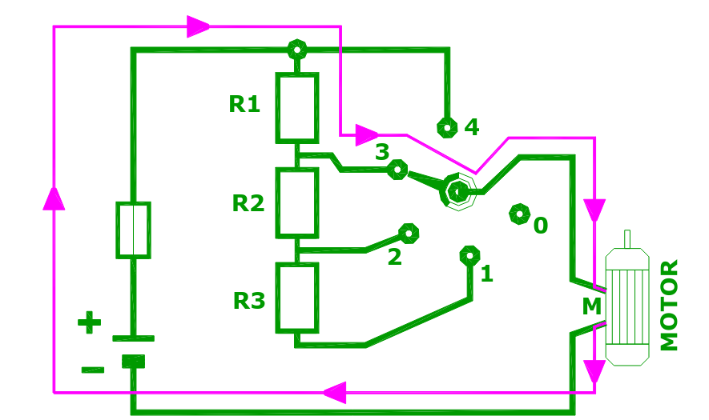
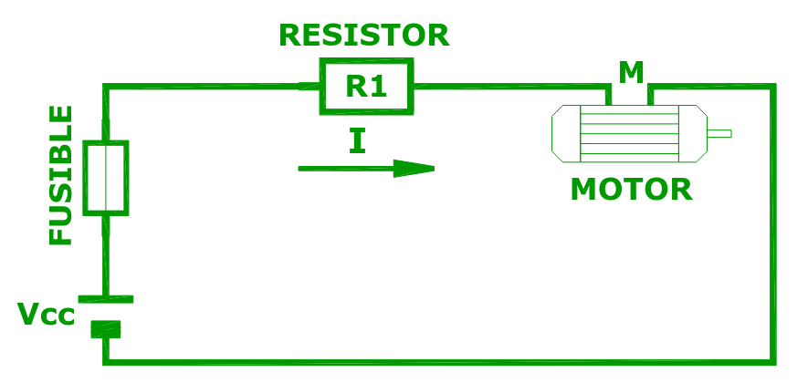
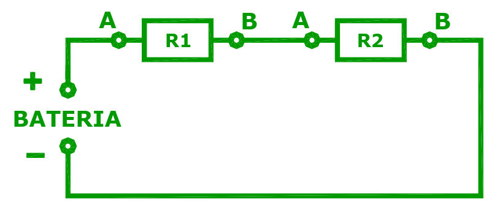
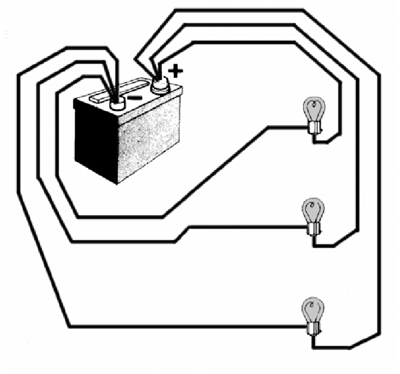
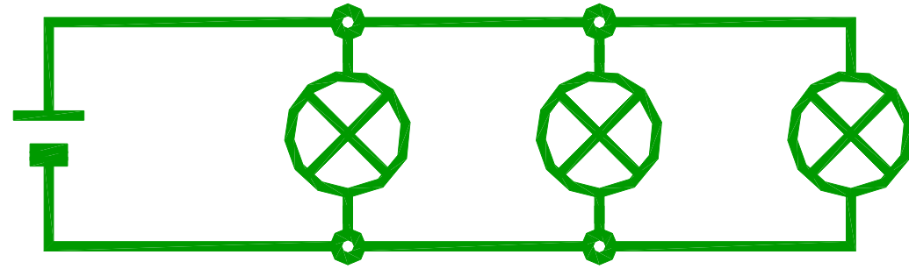
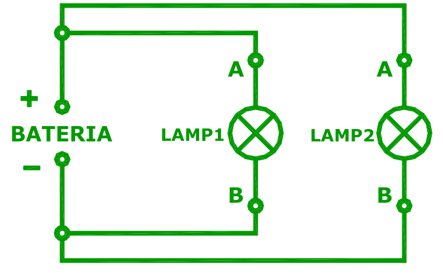
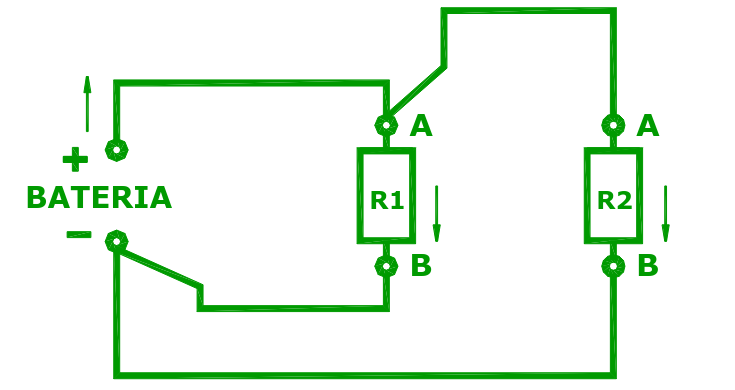
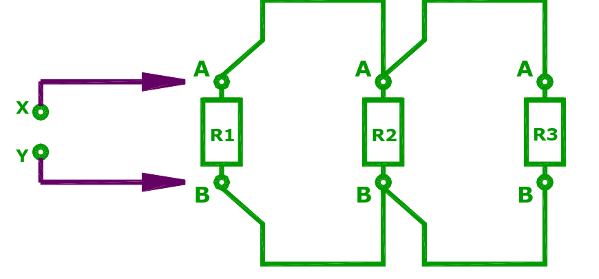

El circuito serie
Un componente a continuación del otro, en una misma rama.
Dos o más componentes están en serie cuando se conectan uno detrás del otro, de manera que la corriente tiene un solo camino para recorrer: sale de la batería, pasa por el primero, después por el segundo, y vuelve.
El ejemplo de la guía es el circuito de velocidades del motor del soplador (el forzador de la ventilación). Según la posición de la llave, entre la batería y el motor quedan intercalados uno o más resistores:

En la posición marcada, el circuito queda así de simple: la batería, el fusible, el resistor R1 y el motor, todos en una misma rama.

Regla 1 del circuito serie: la corriente es la misma en todos lados
Para recordar
- En un circuito serie los componentes están conectados en una misma rama y la corriente que los recorre es la misma en todos ellos.
¿Por qué? Porque no hay otro camino. Si por R1 pasan 2 A, esos mismos 2 A tienen que pasar por el motor: no pueden quedarse a mitad de camino ni irse por otro lado. Es como una manguera: el agua que entra por una punta es la misma que sale por la otra.
Por eso da igual dónde se mida la corriente en un circuito serie: antes de R1, entre R1 y el motor o después del motor, el amperímetro marca lo mismo.
Regla 2 del circuito serie: las resistencias se suman
Si se conectan varios resistores en serie, el conjunto se comporta como un único resistor cuyo valor es la suma de todos. A ese valor se lo llama resistencia equivalente.
REQUIVALENTE = R2 + R3 + R4
Para recordar
- En un circuito serie la resistencia equivalente del conjunto es igual a la suma de las resistencias individuales de sus componentes.
- Cuantos más resistores en serie, más resistencia total y, con la misma batería, menos corriente.
Ejemplo: R2 = 100 Ω, R3 = 220 Ω y R4 = 680 Ω en serie.
REQ = 100 + 220 + 680 = 1 000 Ω (1 kΩ).
Si se conectan a 12 V, la corriente es (Ley de Ohm) I = 12 ÷ 1 000 = 0,012 A = 12 mA, la misma en los tres.
Segunda regla de Kirchhoff
En un circuito serie, la tensión de la batería se reparte entre los componentes.
Volvamos al soplador. ¿Para qué se pone el resistor R1 en serie con el motor? Para verlo, la guía reemplaza el motor por un resistor (R2) y mide la tensión en cada parte:

Se mide la tensión de la batería (VBATERÍA), la que queda sobre R1 (VR1) y la que queda sobre R2 (VR2), y siempre se cumple:
VBATERÍA = VR1 + VR2
2ª regla de Kirchhoff
- «En un circuito serie la suma de las tensiones que resultan aplicadas a cada componente debe ser igual a la tensión aplicada en los extremos de esa rama.»
Una forma de imaginarlo: la batería es una escalera que sube 12 escalones y cada componente es una rampa que baja una parte. Cuando volvés al punto de partida, bajaste exactamente lo mismo que subiste. Ningún componente puede «llevarse» más tensión que la que da la batería.
¿Cómo se reparte la tensión?
No se reparte en partes iguales, sino según la resistencia de cada uno: el que tiene más resistencia se queda con más tensión. Se calcula con la Ley de Ohm, sabiendo que la corriente es la misma en los dos:
- Resistencia total: REQ = R1 + R2.
- Corriente (la misma en todo el circuito): I = VBATERÍA ÷ REQ.
- Tensión de cada uno: VR1 = I × R1 y VR2 = I × R2.
- Comprobación: VR1 + VR2 tiene que dar VBATERÍA.
Ejemplo: batería de 12 V, R1 = 100 Ω y R2 = 200 Ω.
REQ = 300 Ω → I = 12 ÷ 300 = 0,04 A (40 mA).
VR1 = 0,04 × 100 = 4 V · VR2 = 0,04 × 200 = 8 V · 4 + 8 = 12 V ✓
R2 tiene el doble de resistencia que R1, y por eso se lleva el doble de tensión.
La respuesta del soplador
Ahora se entiende para qué está R1: como la tensión de la batería se reparte, el motor recibe solo una parte. Con menos tensión gira más despacio y sopla menos. Cada posición de la llave intercala más o menos resistencia, y así se obtienen las distintas velocidades. En la velocidad máxima el motor va directo a la batería y recibe toda la tensión.
El circuito paralelo
Cada componente en su propia rama, todos conectados a la misma fuente.
Muchas veces varios componentes tienen que conectarse a una misma batería, como las distintas luces del auto (posición, baja, etc.). En ese caso el circuito se ramifica y cada componente queda en una rama propia.


Por la forma que tiene el dibujo —las lámparas quedan como peldaños entre dos líneas paralelas— se lo llama circuito paralelo. Los puntos donde un conductor se divide en varios se llaman nudos (o nodos).
Regla 1 del paralelo: todos reciben la misma tensión

Cada lámpara está conectada directamente entre el + y el − de la batería, así que cada una recibe la tensión completa de la batería. Si la batería tiene 12,4 V, cada lámpara tiene 12,4 V (en la práctica, apenas un poco menos por la resistencia de los cables).
Regla 2 del paralelo: cada rama es independiente
Si se desconecta una lámpara, la otra sigue encendida igual, con la misma tensión y la misma corriente que antes. Por eso en el auto todas las luces van en paralelo: si se quema la del lado izquierdo, la del derecho sigue funcionando. En serie, en cambio, si se corta un componente se corta todo el circuito.
Para recordar
- En un circuito paralelo todos los componentes tienen la misma tensión: la de la fuente.
- En un circuito de componentes conectados en paralelo, cada uno se comporta independientemente del otro.
Primera regla de Kirchhoff
En un circuito paralelo, la corriente de la batería se reparte entre las ramas.

La guía mide tres corrientes: la que entrega la batería (IBATERÍA), la que pasa por R1 (IR1) y la que pasa por R2 (IR2). Siempre se cumple:
IBATERÍA = IR1 + IR2
1ª regla de Kirchhoff
- «En un circuito paralelo, la corriente entrante a un nudo es igual a la suma de las corrientes salientes.»
Otra vez sirve la analogía del agua: si a una T de cañería llegan 5 litros por segundo y salen por dos caños, entre los dos tienen que salir 5 litros por segundo. El agua no se acumula en la T ni aparece de la nada. Con la corriente pasa lo mismo.
¿Cómo se reparte la corriente?
Cada rama tiene la tensión de la batería, así que cada una toma la corriente que le corresponde por la Ley de Ohm: I = V ÷ R. La rama con menos resistencia se lleva más corriente.
Ejemplo: batería de 12 V con R1 = 60 Ω y R2 = 40 Ω en paralelo.
IR1 = 12 ÷ 60 = 0,2 A · IR2 = 12 ÷ 40 = 0,3 A
IBATERÍA = 0,2 + 0,3 = 0,5 A
En el auto: todos los consumidores que cuelgan de un mismo fusible están en paralelo, así que por el fusible pasa la suma de todas sus corrientes. Cada consumo que se agrega suma corriente, y si la suma supera el valor del fusible, se quema.
Resistencia equivalente en paralelo

Si medís con el óhmetro la resistencia de un paralelo, vas a encontrar un valor más chico que el del resistor más chico. Parece raro, pero tiene lógica: cada rama que se agrega es un camino más para la corriente, y con más caminos la corriente pasa con más facilidad.
Para recordar
- En un circuito paralelo la resistencia equivalente es menor a la menor resistencia del conjunto.
Para calcularla hay dos atajos:
- Dos resistores: «producto sobre suma»: REQ = (R1 × R2) ÷ (R1 + R2).
- Resistores iguales: se divide el valor por la cantidad. Dos de 10 kΩ en paralelo dan 5 kΩ; tres de 300 Ω dan 100 Ω.
Ejemplo: 6 Ω en paralelo con 3 Ω → (6 × 3) ÷ (6 + 3) = 18 ÷ 9 = 2 Ω. Es menor que 3 Ω, el más chico de los dos. ✓
Serie y paralelo, lado a lado
Todo lo de esta página en una tabla.
| Circuito serie | Circuito paralelo | |
|---|---|---|
| Cómo se conecta | Uno a continuación del otro, en una sola rama | Cada uno en su propia rama, entre los mismos dos puntos |
| Corriente | La misma en todos | Se reparte: IBAT = I₁ + I₂ + … (1ª regla) |
| Tensión | Se reparte: VBAT = V₁ + V₂ + … (2ª regla) | La misma en todos: la de la batería |
| Resistencia equivalente | La suma: mayor que la mayor | Menor que la menor |
| Si se corta un componente | Se corta todo el circuito | Los demás siguen funcionando |
| Ejemplo en el auto | Resistencia del forzador con el motor | Las lámparas de las luces |
Ejercicios
Escribí el resultado en la unidad que pide cada consigna y comprobá.
¿Terminaste? Seguí con los ejercicios combinados de Ohm y Kirchhoff.